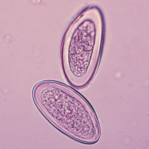

Szociológiai kar - előadás
Helye: Erzsébet krt. 16 III. emelet 6. terem
Ideje: 2024. Február 8. 16:00
Szeretettel ajánljuk a szociológia kar idei előadását mindenkinek akit érdekelnek az aktuális problémák. A fő téma „Ökológiai válság: társadalmi hatások és társadalmi válaszok” amelyről Dr. Nagy Sándor tanulmánya is szól.
Előadó(k): Dr. Nagy Sándor
Jogtudományi kar - előadás

Helye: Erzsébet krt. 16 II. emelet 14. terem
Ideje: 2024. Február 6. 18:00
Az Állam és jogtudományi kar idei prezentációs témájának az adó-, és pénzügyi jogot választották, ahol is meghallgathatjuk az idei tanműhelyes diákok idei projektfeladat vázlatát, amelyet meglepően sok valódi helyzetbe bele tudunk építeni.
Előadó(k): Az állam és jogtudományi kar pénzügyi tanműhely diákjai
Természettudományi kar - előadás
Helye: Szent László u. 45 I. emelet 11. terem
Ideje: 2024. Február 11. 20:00
A mikrobiológia szerelmeseit várjuk idén is egy elképesztő előadásra ahol idén a díjnyertes kutatócsoport két tagja is megjelenik hogy megosszák velünk tudásukat a legújabb baktériumokról szóló kutatásról.
Előadó(k): Mentes Paula, Horváth Ferenc
Anglisztika - előadás
Helye: Kossuth Lajos tér, 18 földszint 78. terem
Ideje: 2024. Február 5. 17:00
Ha beszélsz angolul ez az előadás ideális lehet igazi angolszász nyelvjárások megismerésére és a saját szőkincsed bővítésére. Már halélhattuk nagy szinpadon előadni Willt, aki a mostani előadést is tartani fogja, és mit nem mondjak nagyon jó hangulatú fiatal ember.
Előadó(k): Will Craign
Mérnökinformatika - előadás

Helye: Erzsébet krt. 16 III. emelet 6. terem
Ideje: 2024. Február 6. 14:00
A Technológia folyamatosan fejlődő világában érdemes lehet megpróbálni lépésttartani a legnagyobb újdonsáokkal. Erre kínál megfelelő lehetőséget két Mérnökinformatikus diákunk jelenlegi projektmunkája is. Ezáltal betekintést nyerhetünk a technológia vad válágába.
Előadó(k): Födelevits Alícia, Kelemen Márton
Fizika tanszék - előadás

Helye: József krt. 17 I. emelet Nagy Elődadó
Ideje: 2024. Február 21. 9:00
Mindig is érdekelt téged a Fizika? A tanszék ideji PhD esélyes kutatói most egy előadással készülnek mindazoknak, akik az űr az ismeretlen és persze nem utolsó sorban maga a fizika szerelmesei. A fiatal kutatók már a célmezőnyben vannak Doktori címük megszerzéséért, és biztosak vagyunk benne hogy nagyon sok újdonsággal lephetnek meg mindket.
Előadó(k): Hűvízi Péter, Kelemen Alexander